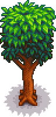

Mahogany Tree
(Redirected from Mahogany tree)
Jump to navigation
Jump to search
| Mahogany Tree | |
 | |
| Information | |
| Seed | |
| Tapper Product | |
| Growth Time | Variable |
A Mahogany Tree is a common tree that grows from a Mahogany Seed. It yields Sap every day when tapped. It can be chopped down with an axe, producing 8-13 Hardwood.[1]
Mahogany Seeds fertilized with Tree Fertilizer have a 60% chance of growing to the next stage each night, including during Winter. Unfertilized seeds have a 15% chance of growing to the next stage. This means that unfertilized mahogany trees usually grow in 26±12 days, while fertilized ones usually grow in 7±2 days.
Mahogany Trees may spawn on floors 41-69 of The Mines when either the "Danger in the Deep" Quest is active or the Shrine of Challenge is toggled on.
Stages of Growth
| Stage 1 | Stage 2 | Stage 3 | Stage 4 | Stage 5 - Spring, Summer, Fall, Winter | Stump - Spring, Summer, Fall, Winter |
|---|---|---|---|---|---|
 |
References
- ↑ See Tree::tickUpdate in the game code.
History
- 1.5: Introduced.
| Trees | |
|---|---|
| Trees | Green Rain Trees • Mahogany Tree • Maple Tree • Mushroom Tree • Mystic Tree • Oak Tree • Palm Tree • Pine Tree |
| Fruit Trees | Apple Tree • Apricot Tree • Banana Tree • Cherry Tree • Mango Tree • Orange Tree • Peach Tree • Pomegranate Tree |
| Seeds | Acorn • Mahogany Seed • Maple Seed • Mossy Seed • Mushroom Tree Seed • Pine Cone • Mystic Tree Seed |
| Fruit | Apple • Apricot • Banana • Cherry • Mango • Orange • Peach • Pomegranate |
| Misc | Large Log • Large Stump • Tea Bush |